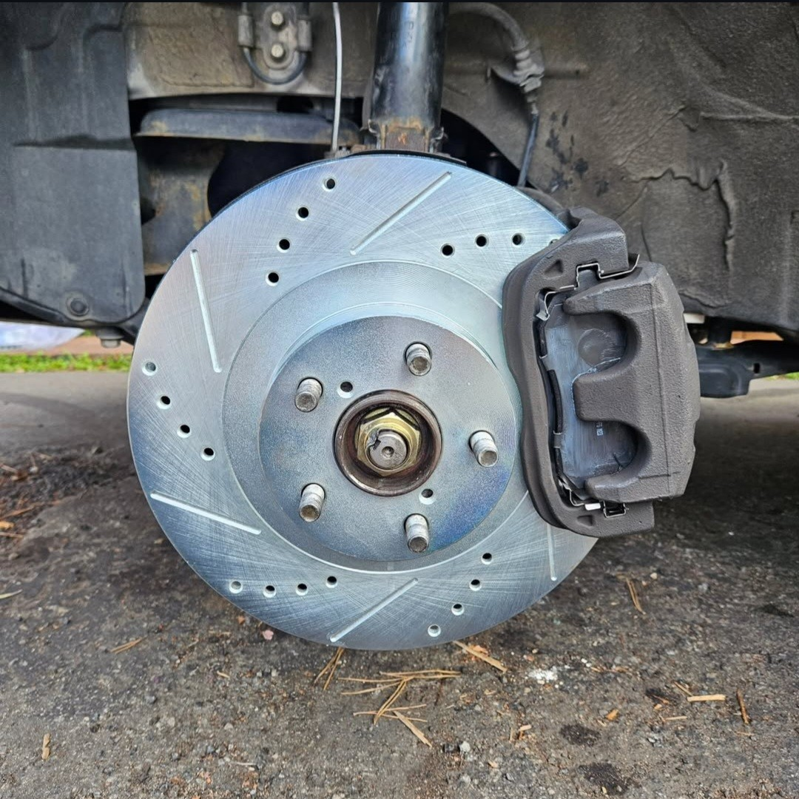
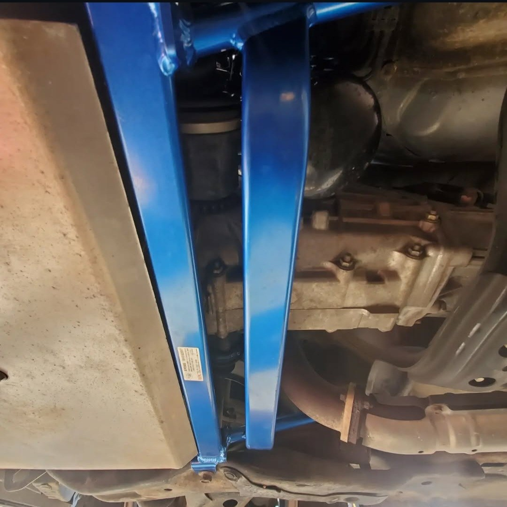
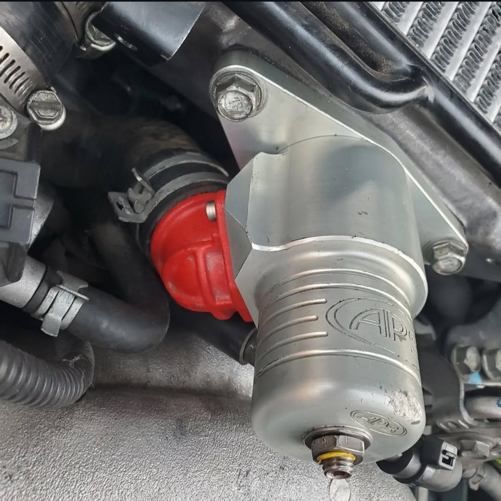
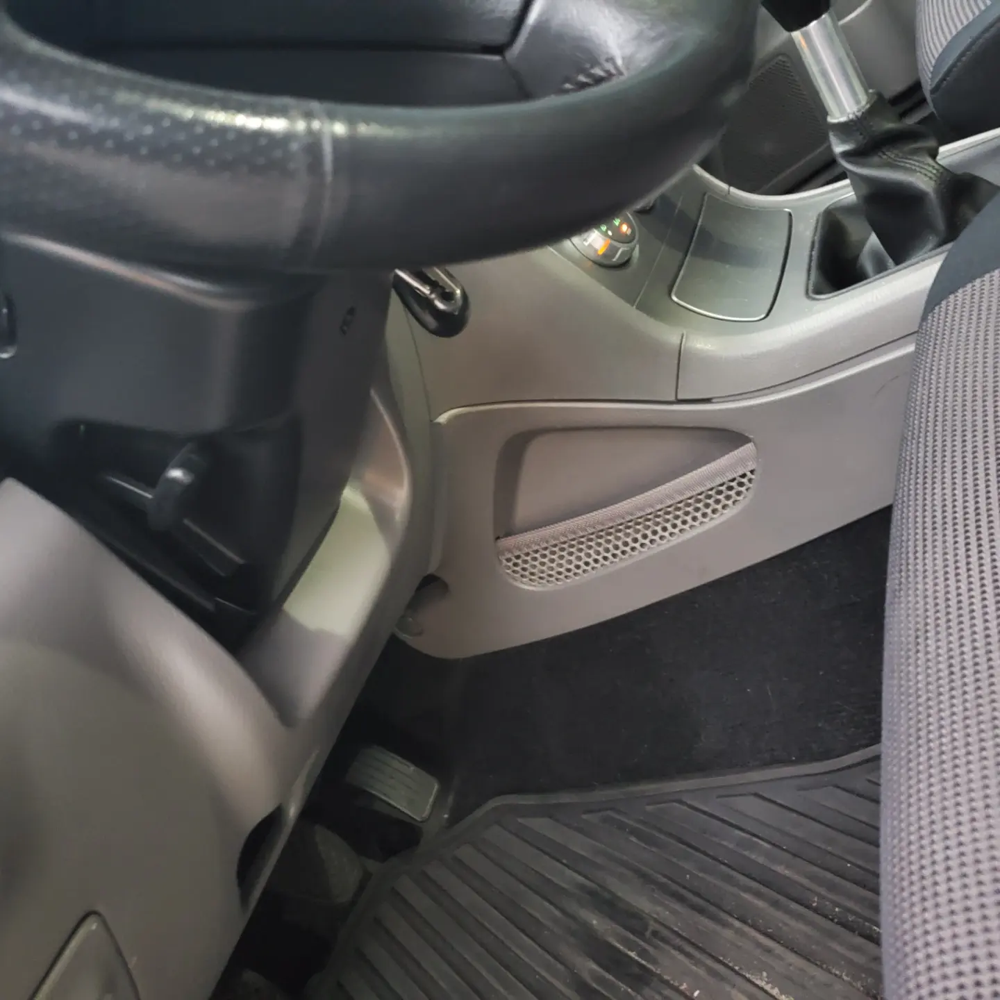

Mastering Maintenance: Self-Servicing the Forester
Hands-on maintenance and upgrades for my Forester XT—brakes, bearings, clutch, and more. A DIY approach for performance, reliability, and customization.
Introduction:
Maintaining and upgrading a vehicle personally can be a rewarding experience, providing not only a deeper understanding of the machine’s mechanics but also a tailored driving experience. My Subaru Forester XT has been the subject of numerous self-administered repairs and upgrades, each chosen and implemented to enhance performance, reliability, and enjoyment.
DIY Repairs and Upgrades:
Brake System Overhaul:
Recognizing the importance of reliable and responsive braking, I replaced the front brake pads and rotors with high-performance drilled and slotted rotors coupled with ceramic dust-free pads. This upgrade ensures better heat dissipation and reduced brake fade, critical for both daily driving and more spirited adventures.
Bearing Replacement:
All wheel bearings were upgraded to tapered roller bearings, which offer better handling of both radial and axial loads compared to the stock ball bearings, enhancing the vehicle’s stability and wheel alignment. I now understand why they charge so much for this service, as this was a much bigger job—the bearings are within the hubs rather than integrated into the rotors like in vehicles I have worked on in the past.
Clutch System Revamp:
The clutch and flywheel were due for an upgrade, so I undertook the substantial task of removing the drivetrain to replace these components. This included the clutch master and slave cylinders, ensuring a smoother, more responsive clutch engagement. I actually had to pull the transmission twice—during the first install, the brackets of the throwout bearing slipped off and in front of the shift fork, causing a sharp angle from the piston of the slave cylinder to the shift fork. This damaged the seals in the slave cylinder and required realignment. A good note for anyone taking on this endeavor is to watch for that.
During this process, I also replaced the shift fork and CV axle seals to prevent future leakage and ensure longevity.
Engine Stabilization:
To minimize power loss through drivetrain movement, I installed Kein polyurethane engine and transmission mounts, as well as a Torque Solutions billet pitch stop mount. These stiffer mounts reduce the flex and shifting of major components under torque, directing more power to the wheels.
Exhaust System Enhancement:
A Magnaflow exhaust system was added to improve exhaust flow. This system strikes a balance between enhancing performance through reduced backpressure and maintaining a street-friendly noise level.
Chassis Rigidity – Cusco Bracing:
To improve handling response and chassis stability, I installed Cusco bracing underneath the Forester. This bracing connects key suspension mounting points, reinforcing rigidity between the shock towers and reducing body flex during cornering.
Blow-Off Valve / Bypass Valve Hybrid:
For optimal turbocharger efficiency, I installed a Combo BOV/BPV that is tuned to release at 5,200 RPM. This setup provides the best of both worlds—recirculating boost pressure at lower RPMs for improved drivability while venting excess pressure at high RPMs for a more aggressive response and turbo longevity.
JDM Upgrades – Small but Functional Additions:
Adding a bit of JDM flair, I sourced a JDM fuse panel cover that features a built-in storage cubby. A simple but practical upgrade that adds extra functionality while maintaining an OEM+ appearance.
The DIY Philosophy:
Performing these upgrades and repairs myself has not only saved on costs but has also allowed for customized enhancements specifically tailored to my driving preferences and the Forester’s performance needs. This hands-on approach ensures that each modification is done to my exact specifications and standards, fostering a unique bond between the car and me. I find performing the work myself as a meditation—where I am in tune with the vehicle, can trust the work being done, and learn about every component so that I can pinpoint errors in the future.
Why DIY?
Cost-Effectiveness: Handling your own maintenance and upgrades can significantly reduce vehicle ownership expenses.
Personal Satisfaction: There’s a profound sense of achievement in diagnosing issues, executing repairs, and seeing the direct results of your efforts.
Customization: DIY projects allow for complete control over the choice of parts and installation methods, enabling personalization beyond what is commercially available.
Conclusion:
Through these DIY projects, my Subaru Forester has been transformed from a capable SUV into a finely tuned, personalized vehicle that meets my specific needs and driving style. Each project is a testament to the versatility and robustness of the Forester as a platform for both utility and performance enhancement.



